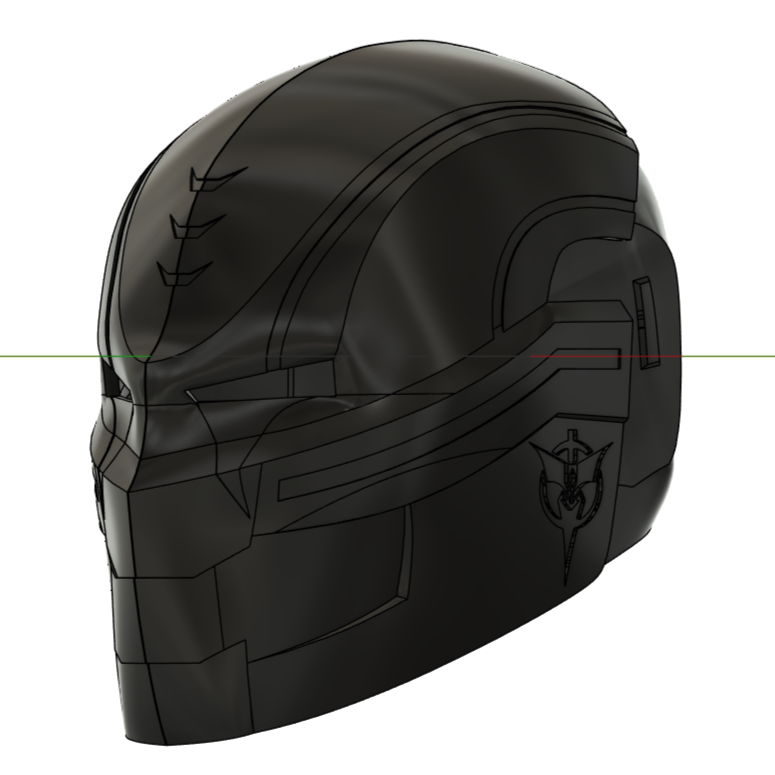
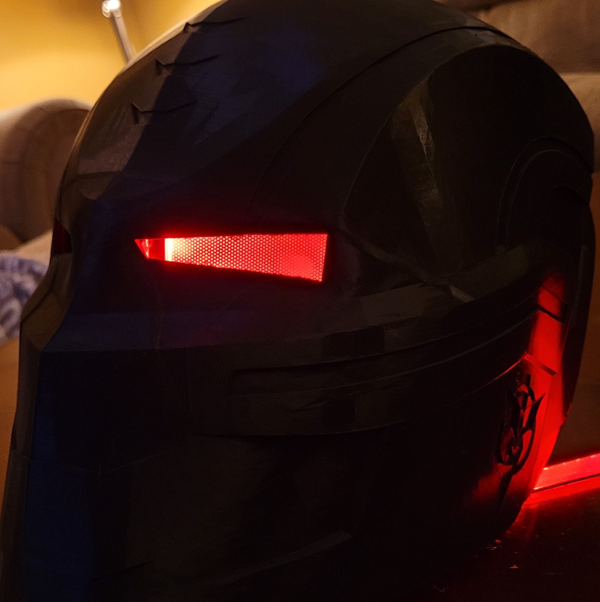
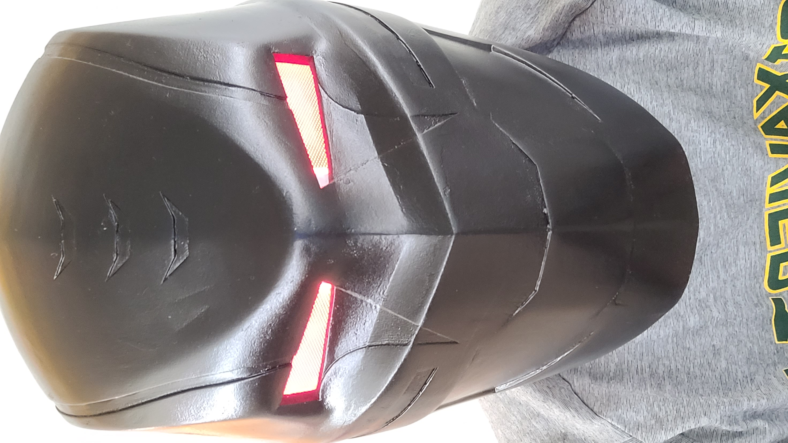

After the construction of my first helmet, I wanted to pursue learning how to 3D Model. I self taught myself how to use Fusion 360, which allowed me to construct a helmet of my own design and head size. I modeled a helmet based off a 3D Model off of Crossbones from Captain American: The Winter Soldier.

While constructing this helmet, I also learned for my mistakes from my previous helmet. I bought a CR-10 V2 and learned how to use Cura, which in my opinion is better than Makerbot's Ultimaker. This enabled me to print custom supports, which left much left of a blemish on it, and allowed me to make it easier to sand, prime, and spray paint.

To properly paint this, I sanded it until it was as smooth as paper using between 180 and 1000 grit. Then I primed it with Rustoleum Filler Sandable Primer. Then I spray painted it with Duplicolor Perfect Match Black. Finally, I installed Arcylic LED Eye panels that I found on Amazon.

Parts List:
- 3D Printed PLA Parts
- Duplicolor Perfect Match Black
- Flexible Led Eye Panels